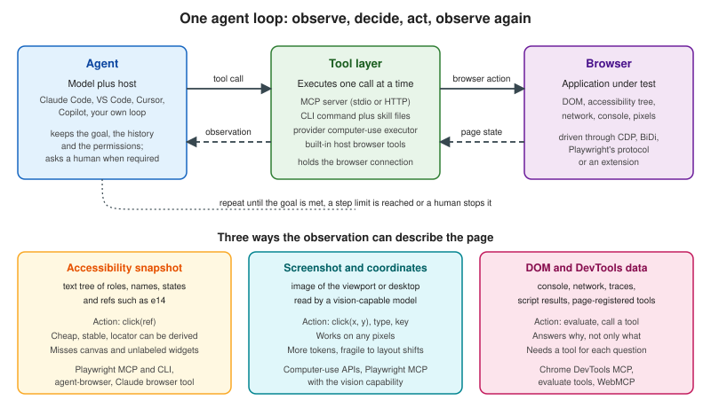

How AI Agents Drive Browsers
|
This content was generated with the assistance of AI and should be verified against the official documentation before being relied on in production. |
An AI agent that tests or explores a web application does not talk to the browser directly. A language model reads text and images and writes text, so something has to turn "click the Sign in button" into a browser action and turn the resulting page into something the model can read. This page explains that machinery: the loop, the three ways a page can be described to a model, the three ways a tool can be attached to an agent, what each choice costs in tokens, and how repeatable the outcome is. It then places Playwright, Cypress and Selenium in that picture and ends with a table of every tool the AI-agents part of this section covers. The other pages of the part go deep on single tools; this one gives the common vocabulary, so they can stay short.
Facts were checked on 25 October 2026 against the baseline of the
section home page: Playwright 1.64, Cypress 16.2 and Selenium 4.51, with Playwright MCP
0.0.83, Playwright CLI (@playwright/cli) 0.1.22 and Chrome DevTools MCP 1.12.0. The examples that say "run" were
executed against the Bookshelf demo application described in
Example Application & Test Layout. Several tools in this
part need an account, a paid key, a specific host application or a browser extension that was not available in the
environment where this page was written; those are described from their official documentation and marked as such where
they appear.
How the runs were driven matters for reading the excerpts honestly. A headless claude -p --mcp-config session could not
authenticate in the environment where the examples were produced, so no Claude Code session wrote the transcripts. A
small stdio MCP client started each real server (@playwright/mcp, @playwright/cli, chrome-devtools-mcp, the
Playwright Test MCP server), and an assistant issued the tool calls one at a time, reading every result before choosing
the next call, which is exactly the loop an agent runs. The tool calls and their outputs are real. The model in the loop
was the assistant that authored these pages, not Claude Code, and no result here says how a given model or host would
behave on its own. The ports in the excerpts are whichever local ports Bookshelf was listening on during the run.
The loop: observe, decide, act
Every browser agent in this part runs the same loop, described in general terms in Agent Loop & Architectures. Applied to a browser it has four steps.
-
Observe. The tool layer returns a description of the page: an accessibility snapshot, a screenshot, or data such as console messages and network requests.
-
Decide. The model reads the observation together with the goal and the history, and chooses the next tool call, or decides that the goal is met or impossible.
-
Act. The host sends the call to the tool layer, which turns it into browser actions: a click, a typed string, a navigation, a script evaluation.
-
Verify. The tool returns the new page state, usually with the action’s result, and the loop starts again.
The loop ends when the model answers without calling a tool, when a step or token limit is reached, or when a human stops it. The host (Claude Code, VS Code, Cursor, the Copilot cloud agent or a program you wrote) owns the permissions: it decides which tools exist, which calls need approval and which origins are reachable. Those controls are the subject of Securing Browser Agents and, in general terms, of Human-in-the-Loop and Agent Guardrails & Safety.

The sequence below is one real step of that loop, taken from a run of Playwright MCP against Bookshelf (the sign-in button click in the first example further down).
Three things in that sequence decide almost everything that follows. The ref e14 only has meaning for the snapshot that
printed it. The server, not the model, resolves the ref to a locator, so the same machinery that makes Playwright tests
reliable (auto-waiting, actionability checks) applies to the agent’s click. And the tool result is added to the model’s
context, so whatever the tool prints is paid for in tokens at every later step.
Three ways to describe a page to a model
Accessibility snapshots with refs
The browser already builds an accessibility tree for assistive technology: roles, accessible names, states, and the
hierarchy between them. Playwright serialises that tree as indented YAML-like text and gives every node a ref, a short
identifier the model passes back to act on the node. Playwright MCP and the Playwright CLI use this as their default and
only observation, and the official introduction says no vision model is required. This is the output of
browser_snapshot on the Bookshelf catalogue (trimmed to the search form; the full snapshot is 2,929 characters).
- generic [active] [ref=e1]:
- banner [ref=e3]:
- navigation "Main" [ref=e5]:
- link "Catalogue" [ref=e6] [cursor=pointer]:
- /url: /books
- link "Sign in" [ref=e7] [cursor=pointer]:
- /url: /signin
- main [ref=e9]:
- heading "Catalogue" [level=1] [ref=e10]
- search [ref=e11]:
- searchbox "Search books" [ref=e13]
- button "Search" [ref=e14] [cursor=pointer]
- paragraph [ref=e15]: 24 books foundSource: Playwright MCP: Snapshots
Ref properties, as documented and as observed:
-
Format.
efollowed by a number, prefixed with a frame id for content in an iframe (f1e12). In the Bookshelf runs the prefixf1andf2appeared after navigation, which the documentation lists as the frame id. -
Scope. Unique inside one snapshot, assigned to every node the tree exposes (not only interactive ones), and valid until the page changes.
-
Targets. Tools take a
targetthat is either a ref or any Playwright selector or locator string, such asgetByRole('button', { name: 'Submit' }). Using a selector skips a snapshot round trip when the model already knows the element. In the 0.0.83 server the argument is calledtarget: a first attempt that passedrefwas rejected by schema validation ("expected string, received undefined" attarget). Each call also carries anelementdescription that hosts show in permission prompts. -
Stale refs fail loudly. The next excerpt is real: after a navigation, a ref from the previous page is rejected rather than clicked.
>>> browser_generate_locator {"element":"Search button","target":"e14"}
### Error
Error: Ref e14 not found in the current page snapshot. Try capturing new snapshot.
>>> browser_snapshot {}
...
- button "Search" [ref=f1e14] [cursor=pointer]
...
>>> browser_generate_locator {"element":"Search button","target":"f1e14"}
### Result
getByTestId('search-submit')Source: Playwright MCP: Snapshots
The same idea has other spellings. Chrome DevTools MCP calls its nodes uid, the Playwright CLI and the Playwright MCP
server share the e14 form, agent-browser writes @e2, and Anthropic’s browser use tool documents ref_2. They all do
the same job: a stable-for-one-observation handle that the server maps back to a node.
## Latest page snapshot
uid=1_0 RootWebArea "Catalogue - Bookshelf" url="http://localhost:3910/books"
uid=1_1 link "Skip to content" url="http://localhost:3910/books#main"
uid=1_3 banner
uid=1_4 link "Bookshelf" url="http://localhost:3910/"
uid=1_6 navigation "Main"
uid=1_7 link "Catalogue" url="http://localhost:3910/books"Source: Chrome DevTools MCP
Strengths: text is cheap per element, the model needs no vision, the names it reads are the same names a user of a screen reader gets (so a page with poor names is also hard for an agent, which is an accessibility finding worth keeping), and the server can derive a real locator from the ref. Weaknesses: the tree is only as good as the page’s semantics, so canvas, WebGL, custom widgets without ARIA and icon buttons without names are invisible or anonymous, and on a long page the snapshot grows with the page (see the measurements below).
Screenshots and coordinates
The other approach gives the model an image and takes pixel coordinates back. This is the mechanism of the computer-use APIs: Anthropic’s computer use tool, OpenAI’s computer tool and Gemini’s Computer Use all define a loop in which the application sends a screenshot, the model returns an action such as a click at (x, y) or a typed string, the application executes it and sends the next screenshot. Nothing in the loop depends on the DOM, so it works on any pixels, including canvas applications, remote desktops and native windows, but every observation is an image, and clicking a coordinate depends on layout staying put between the screenshot and the click.
Playwright MCP keeps the accessibility snapshot as the default and adds coordinate tools behind an opt-in capability,
--caps=vision. The evidence below is a real run on Bookshelf with --caps=vision: the model reads a snapshot with
boxes: true (each node gets [box=x,y,width,height], in viewport CSS pixels), computes a point, and acts through
coordinates only. Typing needs one key press per character, because browser_type always requires a target.
>>> browser_snapshot {"boxes":true}
...
- searchbox "Search books" [ref=e13] [box=251,171,256,39]
- button "Search" [ref=e14] [cursor=pointer] [box=515,171,78,39]
...
>>> browser_mouse_click_xy {"x":379,"y":190}
### Ran Playwright code
// Click mouse at coordinates (379, 190)
await page.mouse.click(379, 190);
>>> browser_press_key {"key":"c"}
await page.keyboard.press('c');
... (o, m, p, i, l, e, r: eight key presses in all)
>>> browser_mouse_click_xy {"x":554,"y":190}
### Ran Playwright code
// Click mouse at coordinates (554, 190)
await page.mouse.click(554, 190);
### Page
- Page URL: http://localhost:3910/books?q=compiler
>>> browser_find {"text":"book found"}
- searchbox "Search books" [ref=f3e13]: compiler
- paragraph [ref=f3e15]: 1 book foundSource: Playwright MCP: Vision Mode
Compare the generated code with the ref-based run shown later: the ref click produced
await page.getByTestId('search-submit').click(), a locator that survives layout changes and can be pasted into a test,
whereas the coordinate click produced page.mouse.click(554, 190), which is only correct for this viewport. The
Playwright documentation recommends vision mode for canvas and map applications, charts, image editors and widgets
without ARIA, and says that for most web applications the default is more reliable and token-efficient. This page was
written with the same view: use coordinates when the tree has nothing to offer, not as the default.
The provider APIs work the same way at a larger scale. The first request carries the tool definition, then each turn adds
an image. Anthropic documents the computer use tool as one computer_toolset_20260801 entry that expands to 17 member
tools (screenshot, left_click, type, zoom and others), and a separate browser use tool, browser_toolset_20260801,
with 31 member tools whose observations are text with refs plus optional screenshots. The skeleton of the client loop in
the documentation is short.
def sampling_loop(model: str, messages: list[MessageParam], max_iterations: int = 10):
for _ in range(max_iterations):
response = client.messages.create(
model=model,
max_tokens=4096,
messages=messages,
tools=TOOLS,
)
messages.append({"role": "assistant", "content": response.content})
tool_results = process_tool_calls(response) # run each action, return screenshots
if not tool_results:
return messages # no more tool use: the task is complete
messages.append({"role": "user", "content": tool_results})
return messagesSource: Claude: Computer use tool
This loop was not run for this page, because it needs a paid API key and an isolated desktop or browser environment that
you control; its shape is the one in the official documentation. The OpenAI computer tool follows the same pattern with a
computer_call item carrying an ordered actions array, and the application answers with a screenshot in a
computer_call_output. Gemini’s Computer Use returns a suggested function_call with normalised coordinates that the
client scales to the viewport, plus a safety decision that can require confirmation or block the action. None of these
three was run here either.
DOM and DevTools data
A third family does not describe the page at all. It exposes browser debugging data as tools: console messages, network
requests, performance traces, Lighthouse audits, heap snapshots, emulation, and script evaluation. Chrome DevTools MCP is
the reference; Playwright MCP has a smaller version of the same idea in browser_console_messages,
browser_network_requests, browser_evaluate and, behind capabilities, tracing and video. These tools answer "why" where a
snapshot answers "what". A real excerpt from Chrome DevTools MCP 1.12.0 on the book page, after the model asked for a
reload with tracing:
>>> performance_start_trace {"pageId":1,"reload":true,"autoStop":true}
...
Metrics (lab / observed):
- LCP: 188 ms
- LCP breakdown:
- TTFB: 0.8 ms
- Render delay: 184 ms
- CLS: 0.00
Metrics (field / real users): n/a - no data for this page in CrUXSource: Chrome DevTools MCP
The details of that server, including its three default-on data flows and how to switch them off, are in Chrome DevTools for Agents.
A fourth source is the page itself. WebMCP is a browser API in a Draft Community Group Report (20 October 2026, not a
W3C standard) through which a web application registers JavaScript tools in navigator.modelContext. Playwright 1.64
reads and calls them through page.webmcp and frame.webmcp; Chromium needs --enable-features=WebMCP, Firefox needs two
preferences, and WebKit does not implement it. Its documentation tells you to treat tool names, descriptions, schemas and
results as untrusted input, since the page supplies all of them. Bookshelf registers no WebMCP tools: the Playwright CLI’s
webmcp-list command answered "No WebMCP tools registered on the page.", so the feature was checked only to that extent
here. When a page does register tools, an agent can call them instead of clicking through the interface, which trades UI
coverage for a stable, declared contract.
Source: Playwright: WebMCP
Mixing the three
Real tools combine them. Playwright MCP returns a snapshot after every action and adds a screenshot only when asked.
Anthropic’s documentation advises reading the tree before taking a screenshot, since a tree read of a typical page often
costs fewer input tokens than a screenshot and returns references the model can act on at once, and keeping screenshots
for layout, images and rendering state. The VS Code browser tools expose readPage and screenshotPage side by side and
a runPlaywrightCode escape hatch. Cursor writes browser logs to files that the agent searches instead of reading in
full. A good agent on a good tool switches observation type when the first one stops answering.
How a tool is attached to an agent
The observation and action vocabulary is one axis; the transport that carries it to the model is the other.
MCP servers
The Model Context Protocol defines how a host discovers a server’s tools and calls them
(MCP Architecture). For browser work the server is a local process that holds the browser
connection and exposes tools such as browser_navigate, browser_click and browser_snapshot. The model never speaks
CDP or WebDriver; it sees tool names, schemas and text results. The usual local transport is stdio, started by the host
from a command; remote servers use Streamable HTTP
(MCP Transports, Connecting MCP Hosts). Playwright MCP also
has an HTTP mode through --port. Adding it to Claude Code is one command or one JSON entry:
claude mcp add playwright -- npx @playwright/mcp@latest{
"mcpServers": {
"playwright": {
"command": "npx",
"args": ["@playwright/mcp@latest"]
}
}
}Source: Playwright MCP: Installation
The JSON entry is the one the Playwright documentation gives; it works in VS Code, Cursor, Windsurf, Claude Desktop and
other hosts, each with its own file location. The claude mcp add form follows the stdio syntax in the Claude Code
documentation and was not executed here, for the reason given in the introduction. The server definitions the run
actually used passed --headless --isolated (a fresh in-memory profile) and an --output-dir for snapshot files; the
other options are on
Playwright MCP & CLI.
Strength: a typed, discoverable contract that any MCP host understands, with per-tool permissions. Cost: every tool’s schema is part of the context on every turn (measured below).
CLI commands and skills
The same engine is available as shell commands. @playwright/cli runs a background daemon that keeps the browser open,
and every command prints the page state it leaves behind. Coding agents already have a shell tool, so nothing has to be
registered, and the schemas do not occupy the context. This is a real session against Bookshelf (named session bk):
$ playwright-cli -s=bk open http://localhost:3971/books
### Browser `bk` opened with pid 49293.
### Page
- Page URL: http://localhost:3971/books
- Page Title: Catalogue - Bookshelf
### Snapshot
- [Snapshot](.playwright-cli/page-2026-10-25T21-47-04-498Z.yml)
$ playwright-cli -s=bk fill e13 compiler --submit
### Ran Playwright code
await page.getByTestId('search-input').fill('compiler');
await page.getByTestId('search-input').press('Enter');
### Page
- Page URL: http://localhost:3971/books?q=compiler
$ playwright-cli -s=bk eval document.title
### Result
"Catalogue - Bookshelf"
$ playwright-cli -s=bk close
Browser 'bk' closedSource: Playwright CLI: Introduction
Note where the snapshot went: to a file whose path the CLI prints, so the agent reads it only if it needs it. A plain
snapshot command prints inline. The agent learns the commands from skills: playwright-cli install --skills copied a
SKILL.md and ten reference files into .claude/skills/playwright-cli/ (--skills=agents uses .agents/skills, and
--global installs into the home directory). The skill’s front matter is a few lines the host can load at start-up, the
15,428-character SKILL.md and the reference files (about 53,000 more characters) are read on demand. The Playwright
documentation summarises the trade as MCP for specialised agentic loops and exploratory automation, CLI plus skills for
coding agents working in large codebases with limited context.
Source: Playwright CLI: Skills
Other tools in this part use the same pattern: agent-browser is a native CLI (agent-browser snapshot,
agent-browser click @e2), Cypress ships AI skills and cypress tap, and Selenium’s guidance is a rules file for the
agent plus the project’s llms.txt (AI Features
in Cypress & Selenium).
Provider tools
Anthropic, OpenAI and Google each publish a tool type the model has been trained on, so the model emits well-formed actions without a prompt explaining the interface. Your application still implements the executor, the sandbox and the approval policy. They sit lowest in the stack (an API call, not a host application), which is why they suit products you build and evaluation harnesses, and why Playwright is often the executor underneath: the Gemini documentation names Playwright as the example automation tool for executing the model’s actions, and the OpenAI sample app includes a JavaScript/Playwright implementation.
Host-integrated browsers
A host can ship browser control itself, with no server to install. Claude Code connects to the Claude in Chrome extension
in Chrome or Edge with claude --chrome; the actions run in a visible window that shares your logged-in state, and Claude
pauses at login pages and CAPTCHAs for you. The VS Code integrated browser has agent tools (openBrowserPage,
navigatePage, readPage, screenshotPage, clickElement, typeInPage, handleDialog, runPlaywrightCode) enabled
by default through workbench.browser.enableChatTools; pages the agent opens use isolated ephemeral sessions, and sharing
one of yours is an explicit button. Cursor’s Agent has a Browser tool with navigate, click, type, scroll and screenshot
that writes logs to files. The Copilot cloud agent enables the GitHub MCP server and the Playwright MCP server by default
(they can be extended with your own). These were not run here: they need the host application and, for Claude in Chrome
and the cloud agent, an account.
What the loop costs
Measured sizes
The sizes below were measured on 25 October 2026 with the real servers and with Playwright 1.64.1 on the Bookshelf catalogue page (24 books, six per page), and on two public pages for contrast. "Characters" are characters of the text the model would receive; the token column is a rule-of-thumb estimate, not a measurement: about four characters per token for English text, and, for images, width times height divided by 750 (the approximation Anthropic documents for its own models; other providers and models count differently). Treat the token column as a way to compare orders of magnitude.
| What the model receives | Size | Estimated tokens | Notes |
|---|---|---|---|
Bookshelf catalogue, raw HTML ( |
3,326 characters |
about 830 |
A tiny page with no inline scripts. |
Bookshelf catalogue, accessibility snapshot ( |
2,819 characters |
about 700 |
The |
Bookshelf catalogue, visible text only |
474 characters |
about 120 |
No structure and no refs: not enough to act on. |
Bookshelf catalogue, viewport screenshot, 1280 by 800 |
70,361 bytes of PNG |
about 1,370 |
Image cost depends on pixel dimensions, not on file size or base64 length. |
Same page at 375 by 812 (phone) |
35,838 bytes of PNG |
about 410 |
Smaller viewport, fewer tokens. |
playwright.dev documentation page, raw HTML |
58,528 characters |
about 14,600 |
Third-party page, read only. |
playwright.dev documentation page, accessibility snapshot |
32,426 characters |
about 8,100 |
Roughly 1.8 times smaller than the HTML. |
Wikipedia article "Web browser", raw HTML |
611,467 characters |
about 153,000 |
Third-party page, read only. |
Wikipedia article, accessibility snapshot |
136,969 characters |
about 34,200 |
About 4.5 times smaller than the HTML, and about 25 times the Bookshelf screenshot. |
Playwright MCP 0.0.83, tool definitions, default (25 tools) |
20,286 characters |
about 5,100 |
Sent with every request while the server is enabled. |
Playwright MCP, |
23,373 characters |
about 5,800 |
Six coordinate tools added. |
Playwright MCP, all optional capabilities (72 tools) |
45,602 characters |
about 11,400 |
vision, pdf, devtools, testing, network, storage and config together. |
Chrome DevTools MCP 1.12.0, tool definitions, default (32 tools) |
29,661 characters |
about 7,400 |
|
Chrome DevTools MCP, |
1,201 characters |
about 300 |
Reduced tool set for lean contexts. |
Playwright CLI skill, |
15,428 characters |
about 3,900 |
Loaded only when the agent needs it, after a short front matter. |
The measuring scripts are short. The core of the page measurement is the following (the tool-definition measurements
start each server over stdio and count the tools/list result in the same way).
import { chromium } from 'playwright';
const browser = await chromium.launch();
const page = await browser.newPage({ viewport: { width: 1280, height: 800 } });
await page.goto('http://localhost:3910/books');
const html = await page.content();
const aria = await page.ariaSnapshot({ mode: 'ai' });
const text = await page.evaluate(() => document.body.innerText);
const png = await page.screenshot();
console.log({
htmlChars: html.length,
ariaChars: aria.length,
innerTextChars: text.length,
pngBytes: png.length,
imageTokensApprox: Math.ceil((1280 * 800) / 750),
});
await browser.close();Source: Playwright: Aria snapshots
What the numbers say
-
Snapshots are not always cheaper than screenshots. The Playwright documentation presents snapshots as far cheaper than DOM dumps or screenshots, and the first half of that holds in these measurements: the snapshot was 1.2 to 4.5 times smaller than the HTML. But the screenshot cost is constant for a given viewport, while the snapshot grows with the page. On the small Bookshelf page the snapshot is about half the estimated cost of a screenshot; on a long article it is many times more. Anthropic’s note ("often costs fewer input tokens") is accurate for typical application pages and wrong for very long ones. Measure on your own pages, and prefer the controls that bound the size.
-
Bound the snapshot.
browser_snapshottakestarget(one element’s subtree),depth,boxesandfilename;browser_findreturns only matching nodes plus context and is "far cheaper" than a full snapshot for locating one element;--snapshot-mode=nonestops tools from attaching a snapshot to every result;--output-max-sizeand--output-dirmove bulky output to files. Chrome DevTools MCP offers--slim, and the CLI writes snapshots to files by default. -
Tool definitions are a fixed tax. A default Playwright MCP server adds about 5,000 estimated tokens to every request, and enabling every optional capability more than doubles that. The CLI avoids the tax at the price of a skill file loaded when needed, and Anthropic’s tool-search feature and
defer_loadingoption exist so that a toolset’s definition is not loaded until needed. -
Observations repeat. Without bounds, each action re-sends a snapshot. In the sign-in and review run (28 tool calls on three small pages), the snapshot files written by the server were between 758 and 2,257 bytes each. On a heavy page, the same run would have cost orders of magnitude more, which is the reason for
--snapshot-modeandbrowser_find. -
Cost is also time. Each step is one model call. A coordinate loop that types eight characters with eight key presses, as above, is eight round trips where
browser_typeis one.
Determinism and repeatability
An agent run is not a test. The same prompt can take different routes, spend different amounts, and end in different words, and an agent can be wrong confidently. What an agent can do well is explore and produce an artefact, and the tools differ in how good the artefact is.
-
Refs are ephemeral, locators are not. A ref is meaningful for one snapshot; the stale-ref excerpt above shows the tool refusing an old ref rather than guessing. What persists is the code the tool ran: every Playwright MCP and CLI action in the transcripts is followed by a
Ran Playwright codeblock with a real locator (getByTestId('review-submit')). Copying those lines into a spec turns an exploratory run into a repeatable test, the idea behind Script-less Testing with AI Agents. -
Generated assertions need review. With
--caps testing, thebrowser_verify_*tools return "Done" and the equivalentexpect()call. One of them,browser_verify_text_visible, generatedexpect(page.getByTestId('result-count')).toBeVisible()for the text "24 books found": it checks that an element is visible, not that it contains the text. A human or a second pass must read the generated assertion, not the word "Done". -
Coordinates are not repeatable. A coordinate click records only the point, so it cannot become a robust test step.
-
Natural-language steps trade control for convenience.
cy.prompt(Cypress Cloud) and Stagehand’sactrun steps written in English, and both cache the resolved actions so that reruns do not call the model; Cypress describes self-healing when the page changes. They are covered in AI Features in Cypress & Selenium and Agents That Control the Browser. -
Pin what you can. Pin tool versions (
@playwright/mcp@0.0.83instead of@latest), model and temperature where the host allows it, use a seeded application state (Bookshelf’s/api/test/seed), and give the agent stabledata-testidhooks. These reduce, not remove, variance. Evaluating agent behaviour as such is a topic of its own (Agent Evaluation).
A practical split: let the agent explore, reproduce a bug, write a test or repair one, and let the committed code be the regression suite that runs in CI without a model (Playwright Test Agents).
Where Playwright, Cypress and Selenium fit
| Aspect | Playwright 1.64 | Cypress 16.2 | Selenium 4.51 |
|---|---|---|---|
Agent can drive a browser through this tool |
Yes, as a product: Playwright MCP, Playwright CLI, Test Agents, and Playwright as the executor in many other tools. |
Not as a general browser. Cypress runs inside the browser under a test runner, so agents work through the runner:
|
No official MCP server. Agents write and run WebDriver code; the project publishes a guide for AI coding agents. |
Observation an agent gets |
Accessibility snapshots with refs, optional screenshots, console, network, traces. |
Runner output, screenshots, videos and Cypress Cloud data (read-only through the Cloud MCP server). |
Whatever the generated script prints or a community server returns; BiDi events are the standard source. |
What the agent produces |
Playwright Test code, specs and Markdown plans. |
Cypress specs; |
Selenium tests in any binding. |
Fit |
Exploration, test generation and repair, any agent host. |
Teams already on Cypress that want AI authoring and failure analysis. |
Teams on Grid and several languages that want the agent to write conventional tests. |
Details for Cypress and Selenium are on AI Features in Cypress & Selenium. Three points settle most questions. First, the agent’s tool and the project’s test framework are separate choices: an agent can explore with Playwright MCP and hand you a Selenium test, though the generated locators are Playwright locators and need translation. Second, for a project that already uses Playwright Test, every mechanism on this page lines up with code you already own, which is why the section treats it as the default for agent work. Third, Cypress and Selenium both reach agents through files and rules, not through a browser-control server; that is a statement about their official products at the check date and says nothing about the quality of the tests they run. The underlying protocols are in How Browser Automation Works, and the broader tool choice is in Choosing a Tool.
Every tool in this part
The table lists each tool the part covers. "Observation" is the dominant way the tool shows the page to the model; "Evidence" says whether the behaviour described in this section was run here or taken from official documentation.
| Tool | Observation and action | How it attaches | Check-date version or status | Evidence |
|---|---|---|---|---|
Playwright MCP |
Accessibility snapshot with refs; optional coordinates, tracing, testing, network and storage capabilities. |
MCP server over stdio or HTTP; Docker and extension mode documented. |
0.0.83 (Apache-2.0) |
Run: sign-in, review, vision, testing capability, resize and evaluate. Docker and extension mode documented only. |
Playwright CLI |
Accessibility snapshot files with refs; shell commands. |
|
0.1.22 (Apache-2.0); bundled as |
Run: sessions, fill, eval, screenshot, tracing, |
WebMCP |
Tools registered by the page itself. |
Browser API |
Draft Community Group Report, 20 October 2026; experimental in Chromium and Firefox, absent in WebKit |
Documented; the only check run was that Bookshelf registers no tools. |
Chrome DevTools MCP |
Accessibility snapshot with |
MCP server over stdio. |
1.12.0 (Apache-2.0) |
Run: pages, navigation, console, network, trace, emulation, Lighthouse, snapshot. |
Playwright Test Agents |
Planner, generator and healer agents with Playwright test tools. |
|
Introduced in Playwright 1.56; run with 1.64.1 |
Run through the stdio bridge, with the authoring assistant acting as each agent. |
|
Natural-language steps resolved against the page, cached. |
Cypress command; needs Cypress Cloud. |
Generally available on the Cloud AI features page, beta on the command’s API page |
Documented; needs a Cypress Cloud account. |
Selenium AI guide |
Guidance, not a tool: docs index ( |
Files read by any coding agent. |
Documentation section and blog post of 29 September 2026 |
Documented. |
Claude computer use tool |
Screenshots and coordinates in a desktop environment. |
Claude API client toolset |
Current toolset; |
Documented; needs an API key and an isolated environment. |
Claude browser use tool |
Page reads with refs, optional screenshots; 31 member tools. |
Claude API client toolset |
Current toolset |
Documented; needs an API key. |
Claude Code |
Host. Uses MCP servers, skills and the Chrome integration. |
CLI, VS Code extension, desktop app; |
Not versioned here |
Not run (authentication unavailable in the environment); commands taken from its documentation. |
Claude in Chrome |
Browser extension that shares your logged-in browser. |
Connected to Claude Code with |
Extension; not supported in WSL |
Documented; no extension was connected where this page was written. |
OpenAI computer use |
Screenshots; |
Responses API tool of type |
Current guide |
Documented; needs a paid key. |
Gemini Computer Use |
Screenshots; |
Gemini API tool; you run the executor, for example with Playwright. |
Current docs list the supporting models |
Documented; needs a paid key. |
Copilot cloud agent |
Runs in GitHub’s environment; Playwright MCP server on by default. |
Repository MCP settings; custom agents. |
Renamed from "Copilot coding agent" |
Documented; needs a Copilot plan. |
VS Code browser tools |
Page read, screenshot, element actions, |
Built in; setting |
Current VS Code docs |
Documented; the host was not driven here. |
Cursor Browser |
Navigate, click, type, scroll, screenshot; logs in files. |
Built in; governed by the MCP allowlist and denylist for enterprise. |
Current Cursor docs |
Documented; the host was not driven here. |
browser-use |
Open-source Python library and hosted cloud agents and browsers. |
SDK ( |
PyPI |
Documented; needs a model key. |
Stagehand |
|
Library for TypeScript, Python and Go. |
|
Documented; needs a model key. |
Skyvern |
AI-driven browser agent that works from described tasks. |
App, REST API, SDK, MCP server, self-hosted. |
PyPI |
Documented; needs an account or model keys. |
agent-browser |
Accessibility snapshot with |
Native Rust CLI. |
0.39.2 (Apache-2.0) |
Documented; not installed here. |
Magentic-UI |
Research prototype from Microsoft AI Frontiers that works in a browser and keeps the user in the loop. |
Python application; the repository now describes MagenticLite as the next generation. |
PyPI |
Documented; not run. |
Retired or uncertain products appear in history only. OpenAI announced that the standalone ChatGPT Atlas browser stops working on 9 August 2026, with browsing and agent features moving into the ChatGPT desktop app and a Chrome extension; whether the earlier standalone "ChatGPT agent" was discontinued was not confirmed by any source found, so the claim is left open. Google’s Project Mariner is a research prototype whose capabilities were folded into Gemini Computer Use, according to the earlier project documentation; the Project Mariner page still loaded at the check date and carried no retirement wording. None of these is a tool to build a test strategy on.
Choosing a starting point
-
You have a coding agent and a Playwright project. Use the Playwright CLI with skills, or Playwright MCP when the host has no shell. Start with refs; add
--caps=visiononly for the canvas or widget that needs it. -
You are debugging performance, console or network behaviour. Chrome DevTools MCP, with
--slimor the full set depending on the context budget. -
You want agents to write tests, not just run flows. Playwright Test Agents, and review the specs they write.
-
You are building a product that operates arbitrary sites or desktops. A provider computer-use or browser-use API with your own executor, sandbox and approval step, plus the controls in Securing Browser Agents.
-
You are on Cypress or Selenium. Use their documented AI features and rules files; use a Playwright-based server only as an exploration aid and translate the result.
Whatever the choice, every page the agent reads is untrusted input and the agent may follow instructions found in it. The
general threats are in Prompt Injection and
Excessive Agency & Tool Security, and the browser-specific
mitigations (origin allowlists, isolated profiles, secrets handling) are in
Securing Browser Agents. One honest limit from the Playwright
documentation applies directly: the --allowed-origins and --blocked-origins options are not a security boundary and
do not affect redirects.
What changed recently
-
Playwright 1.64 added
page.webmcpandframe.webmcp,page.getByRef()(a ref from the AI-mode aria snapshot) and other items; MCP and CLI are bundled in the 1.62 and later packages (npx playwright mcp,npx playwright cli), as checked in 1.64.1. -
Playwright MCP 0.0.83 has 25 core tools and seven capability groups. Besides the documented
vision,pdfanddevtools, the groupstesting,network,storageandconfigwere accepted by--capsat the check date; the--helptext lists only the first three. -
Chrome DevTools MCP is on 1.12.0, with a
--slimmode and opt-outs for usage statistics and CrUX lookups. -
Anthropic moved computer use to the
computer_toolset_20260801client toolset and added the browser use tool with refs; earliercomputer_20251124integrations keep working. -
OpenAI and Google now document computer use as a tool in their general APIs; check the model list on each page, since supported models change quickly.
-
Cypress 16.2 added
cy.getByRole(), a query that suits agent-written tests because it targets role and accessible name; the Cloud MCP server (read-only) has been generally available since 20 May 2026. -
Selenium published an AI-agents documentation section in September 2026.
-
WebMCP has a Draft Community Group Report dated 20 October 2026; it is not a W3C standard.